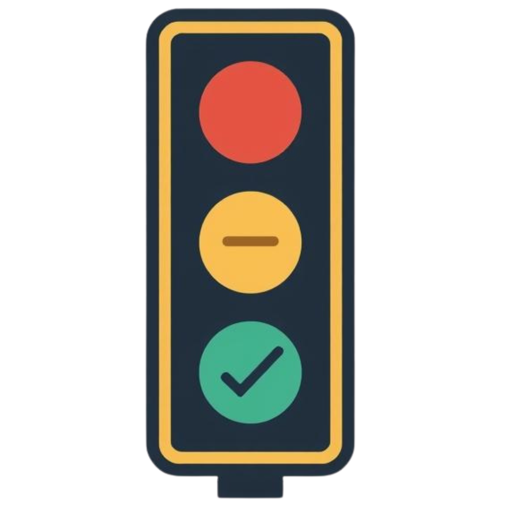
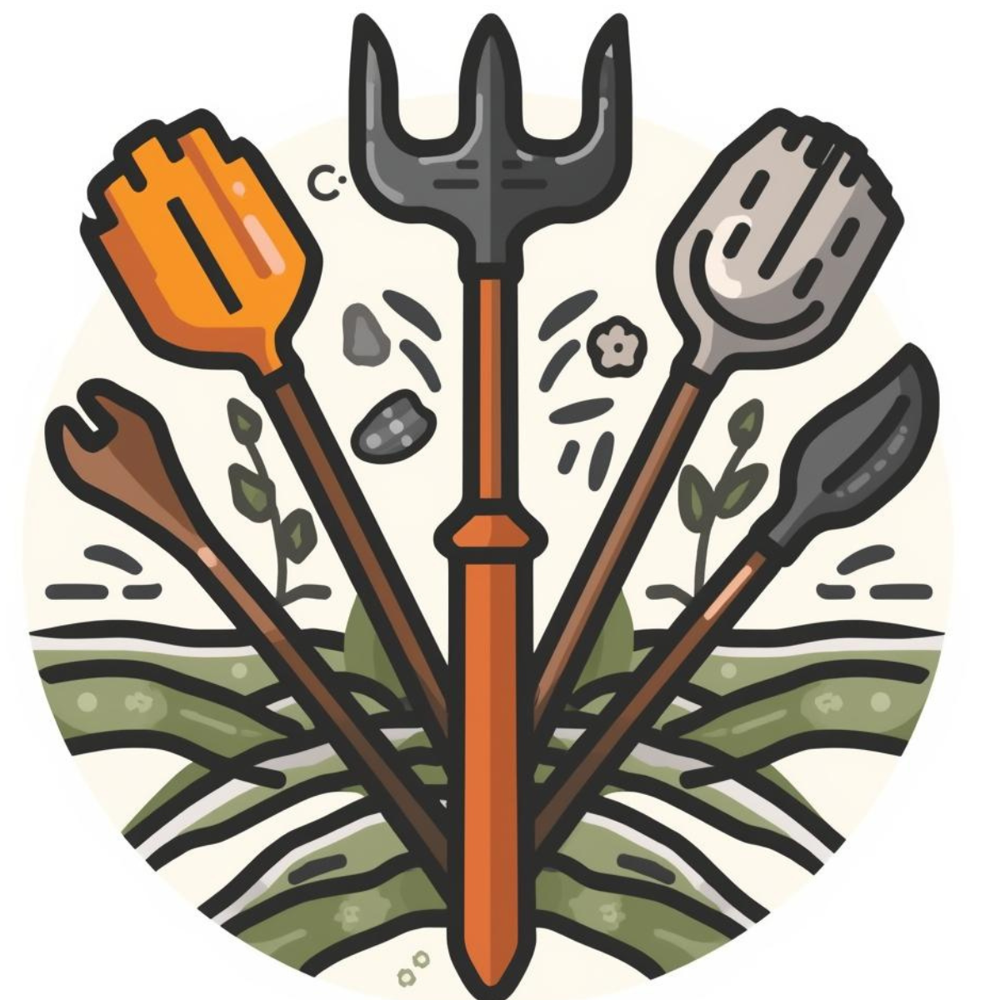

Bienvenido,
Este es tu panel de control para gestionar tu parcela, pedidos y recomendaciones.
Estado actual de tu parcela

Humedad: —%

Última fertilización: —

Estado general: —
Recomendaciones para mejorar tu cultivo

—